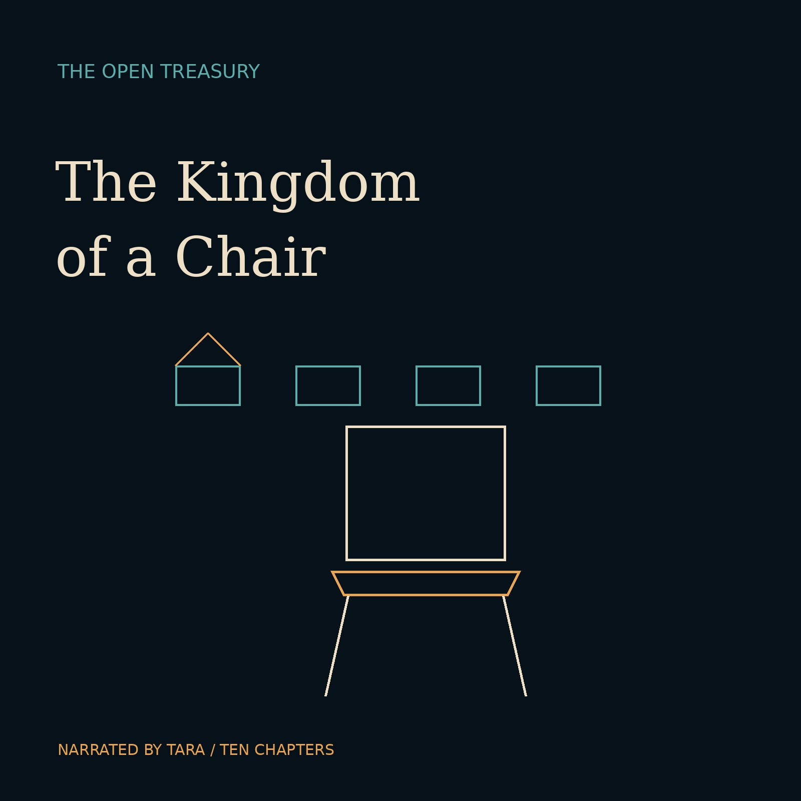

The Kingdom of a Chair
Toys, unfinished worlds, and the player who completes them. Stevenson's chair, Baudelaire's toy essays and a V&A miniature-house account invite a critical comparison of objects and play.
Historical literary essays read critically, not child-development science, parenting advice, a product ranking or a shopping recommendation. Optional safe-object exercise: no purchase, damage, climbing, throwing, fire or dismantling. No animal-distress reenactment or romanticizing deprivation.
Chapters
- 00:00 - Please stop being a castle
- 02:17 - Two adults, two verdicts
- 04:49 - The thing not included
- 07:23 - Too beautiful to touch
- 09:50 - Where is its soul?
- 12:18 - A gate between two children
- 14:46 - The objection: a sermon against good toys
- 17:14 - A house that is not a report
- 19:33 - One object, three invitations
- 21:53 - Give the chair back
Sources and complete script
Source, rights and audio notes
Complete spoken script
Rights and narration
Original literary commentary and synthetic Aoede narration. Stevenson and Baudelaire read critically as historical essayists, not modern developmental authorities. One short French quotation and our own English translation. V&A account independently paraphrased; no museum images, modern English translation, music or copied toy designs. Original commentary/narration CC0 only; third-party text/site/image rights separate, no blanket source-edition license.
Full automated wording comparison and targeted audio/name/French/Latin/join checks, not full human-ear or native pronunciation certification. One paragraph repair with logged wording clarification; untouched originals preserved. Master-17.47LUFS/-1.72dBTP; MP3-17.91/-1.95. Fixed+2.42dB gain and transparent peak limiting only, no EQ/pitch/speed change. Original symbolic moving animation without unsafe reenactments.
Free without ads, paid access, sponsorship or support solicitation.